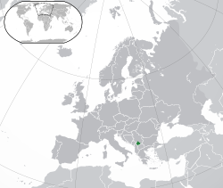

Gjeografia në Kosovë
E shtrirë në qendër të Siujdhesës Ballkanike, Kosova është një vend pa dalje në det, me reliev të larmishëm, dhe ka një sipërfaqe prej 10.887 kilometrash katrorë. Ka gjithsej 702 kilometra vijë kufitare me shtetet përbri: 352 km me Serbinë, 159 km me Maqedoninë, 112 km me Shqipërinë dhe 79 km me Malin e Zi.[7] Me reliev kryesisht në trajtë të pellgut lumor, Kosova është gjeografikisht e ndarë në dy rrafshe parësore, atë të Kosovës në lindje dhe atë të Dukagjinit në perëndim. Lartësia mbi nivelin e detit në rrafshe luhatet prej 400 deri në 700 metra, ndërsa pika më e ulët prej 297 metrash ndodhet në Vërmicë në kufi me Shqipërinë. Dy rrafshet janë të ndara dhe të rrethuara me vargmale të theksuara në lartësi prej 2.000 deri në 2.500 metra; pika më e lartë, Gjeravica, arrin në 2.656 metra. Lartësia mesatare mbi nivelin e detit është 811 metra. Urë mbi Drinin e Bardhë, lumin me rrjedhë prej 122 km në territorin e Kosovës
Gjeografia e Kosovës
Kosova ofron një larmi të peizazheve të mahnitshme nga malet e larta deri tek fushat pjellore dhe lumenjtë që e pasurojnë territorin.

Bjeshkët e Nemuna
Vargmal i egër dhe madhështor në perëndim të Kosovës, ideal për alpinizëm dhe aventura.

Liqeni i Ujmanit
Një nga liqenet më të mëdha, burim i rëndësishëm i ujit dhe energjisë për gjithë Kosovën.
Fusha e Kosovës
Një fushë historike dhe bujqësore që ka rëndësi kulturore dhe ekonomike të madhe për vendin.
Shiko në hartë
Klima e Kosovës
Republika e Kosovës
Republic of Kosovo
Republika e Kosovës (Albanian)
Република Косово / Republika Kosovo (Serbian)
.png)
Flamuri i Kosovës
Flamuri i Kosovës u miratua më 17 shkurt 2008, në ditën e shpalljes së pavarësisë. Ai ka një sfond blu, me një hartë të artë të Kosovës në qendër dhe gjashtë yje të bardha harkuar mbi të, që përfaqësojnë gjashtë komunitetet kryesore në vend.
Emblema e Kosovës
Emblema e Kosovës ka një mburojë blu me një hartë të artë të vendit në mes dhe gjashtë yje të bardha sipër saj. Dizajni i saj është i ngjashëm me flamurin dhe simbolizon shtetësinë dhe unitetin e Kosovës.

Vendndodhja e Kosovës
Kosova ndodhet në Evropën Juglindore, në rajonin e Ballkanit Perëndimor. Kufizohet me Serbinë në veri dhe lindje, Maqedoninë e Veriut në jug, Shqipërinë në jugperëndim dhe Malin e Zi në perëndim. Kryeqyteti i Kosovës është Prishtina.